Esta época del año incluyó el 5 de febrero, el día que por fin te hablé gracias a todas nuestras conversaciones en clase y a la teacher que me convenció de escribirte; nuestra primera quedada en nuestra cafetería, nuestro primer día de gym juntos y hasta el día que me invitaste a tu cumpleaños, el 15 de junio. Unos meses en los cuales nos llegamos a conocer para luego dar paso a todo lo que vendría después.
Julio ☀️
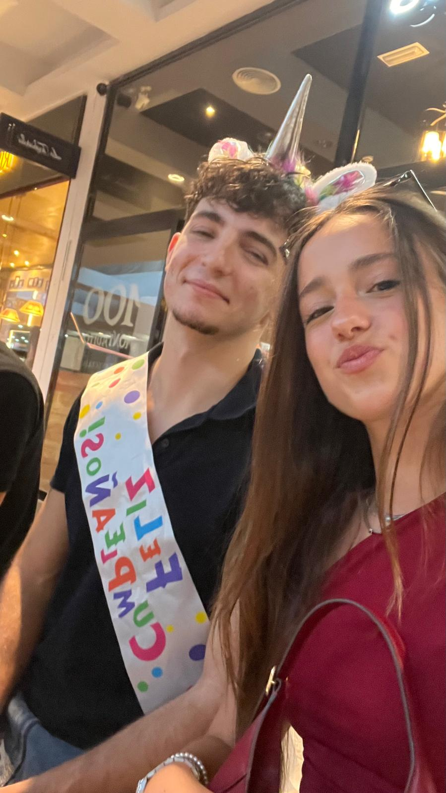
Volvimos a hablar por el intensivo de julio del Yellow y, el día de mi cumpleaños (gracias a tu carta), tuvimos nuestro primer beso (aunque suene un poco lachoso) y el comienzo de algo bonito entre nosotros. Tras los días practicando inglés, las quedadas, la feria y el C1, nos dimos cuenta de lo que podíamos llegar a ser. Aunque teníamos diferencias, el 30 de julio acordamos que no nos impedían tener una relación y, tras la cena, al llegar a mi casa, te pedí ser mi novia (in English). Aunque te dio miedo y no creíste que fuera el momento perfecto, yo sentí que era el correcto, y como tuve la razón.
Agosto 🌻
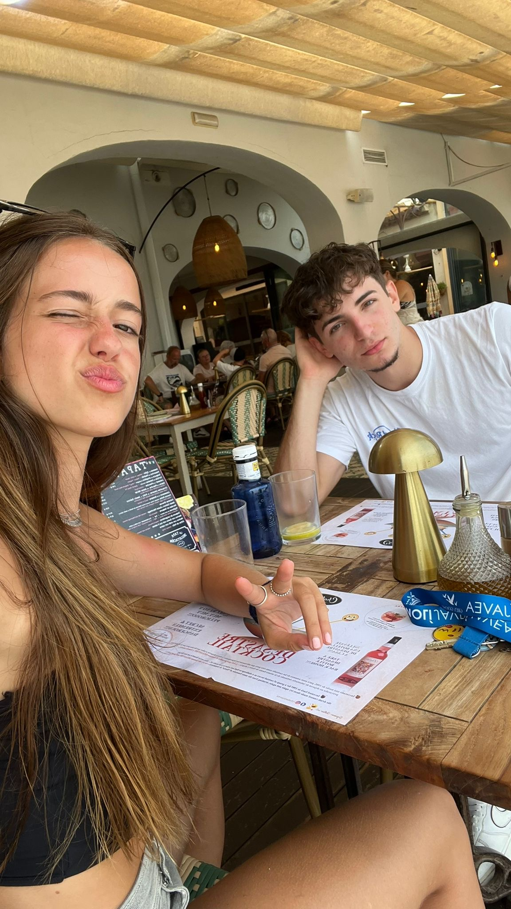
Casi todo el mes separados. Aunque no fueron mis semanas favoritas, aprendimos cosas de la distancia. La última semana fue de mis favoritas: cuando subí a Jávea, lo pasamos muy bien, y cuando volviste a Valencia quedamos varios días antes de que me operaran, como cuando fuimos a la iglesia juntos con Clara y Dani.
Septiembre 🍂
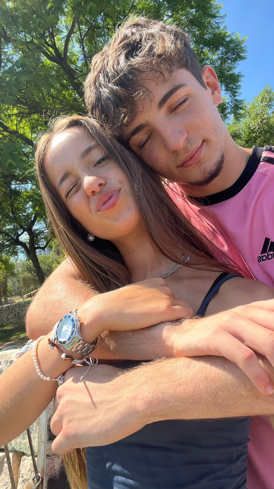
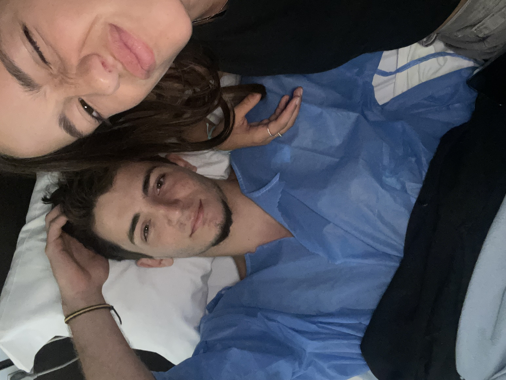
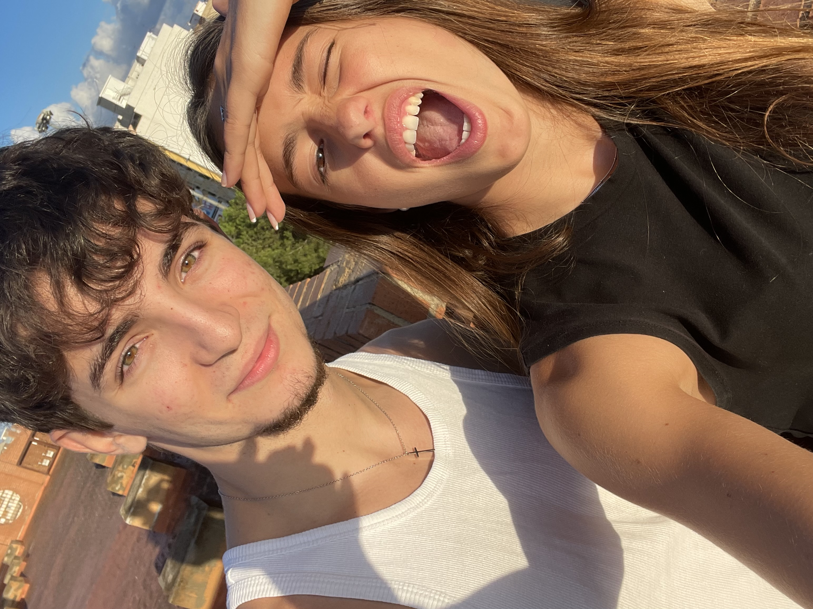
Empezamos el mes con el día que me abrí a ti en el cual me ayudaste y me apoyaste, ese día me di cuenta que que estabas ahí para mí, lo mismo con el día que me viniste a visitar al hospital y a pesar de ser un mes difícil para mí tú lo hiciste más llevadero y por tu ayuda hice y te di de regalo la pulsera con la madre de Jesús (la cual rompiste😡)
Octubre ✝️
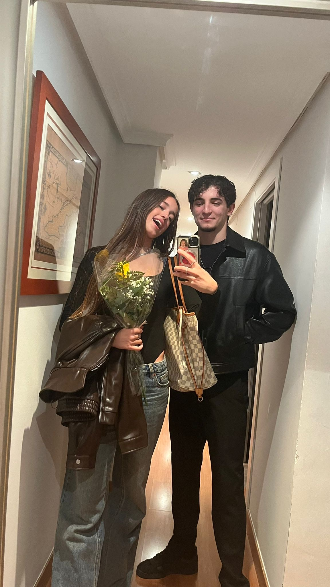
Nuestro tercer mes juntos. Seguías estando ahí para mí y todo iba mejorando poco a poco, especialmente nuestra relación. Este mes tuvo días especiales como cuando te invité a mi casa a comer la carne que preparé o la cena italiana por nuestro tercer mes, con mi regalo de la Biblia.
Noviembre 🍁
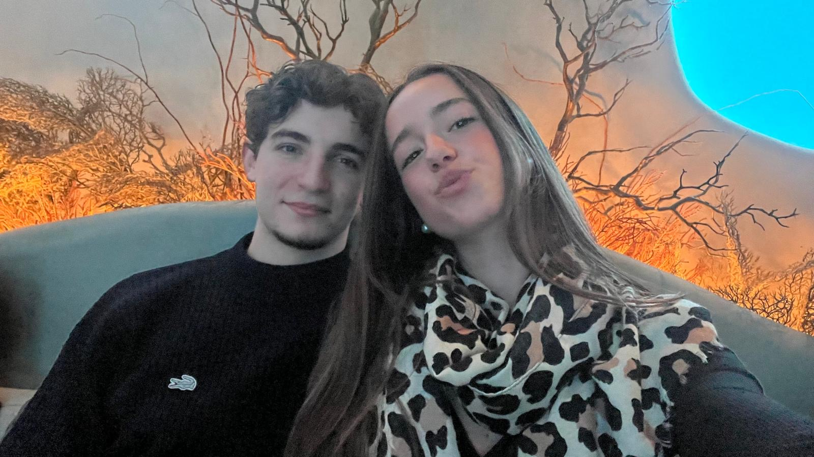
Nuestro cuarto mes tuvo días como el del sushi, en el que mi barriga sufrió, pero lo pasamos muy bien. También el día que fuimos a cenar al centro y paseamos con tu amiga Almudena y su novio Pablo. Y después, tu pedazo de regalo del calendario de Adviento.
Diciembre 🎄
El último mes del año. Empezándolo con mi sorpresa del calendario de Adviento, luego el día que montamos mi árbol de Navidad, seguido de muchos días disfrutando simplemente de estar contigo. Y, por último, nuestra primera Navidad juntos, con mi regalo, el de tus padres y el mejor de todos: seguir juntos.
 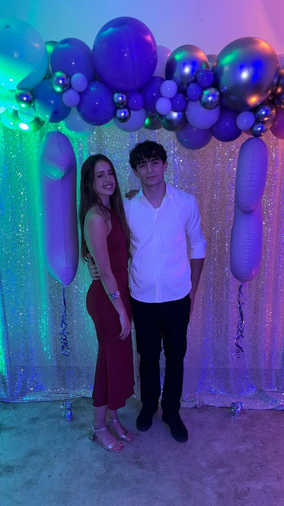
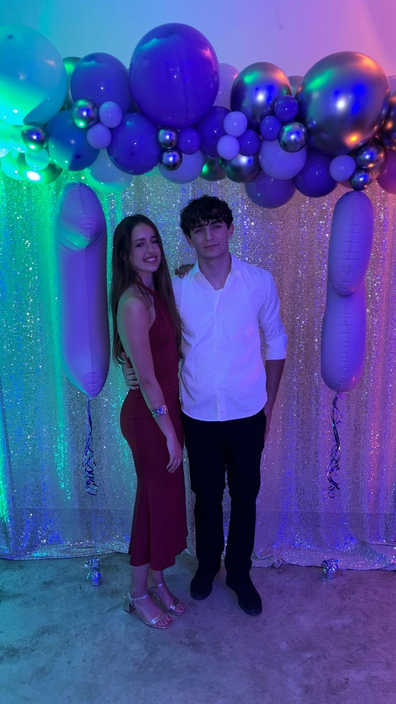


 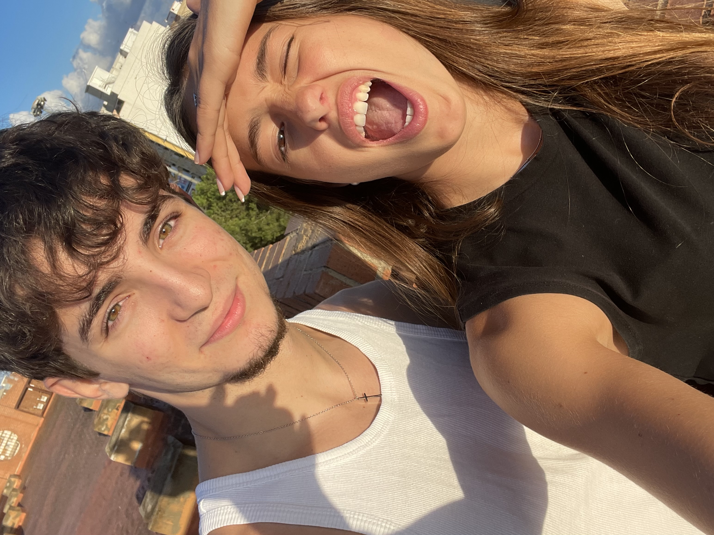
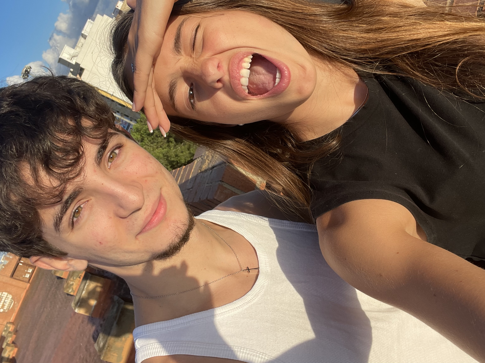
 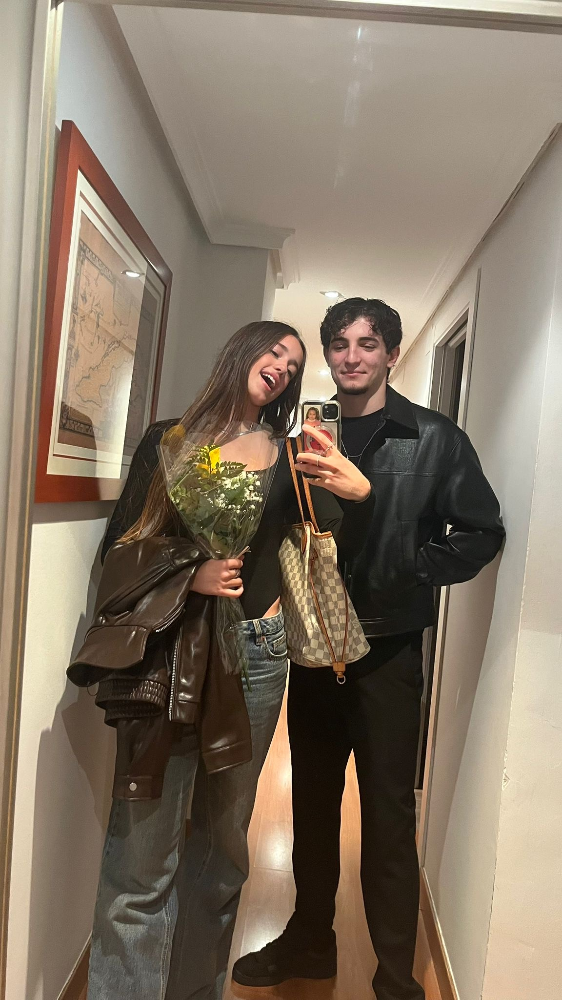
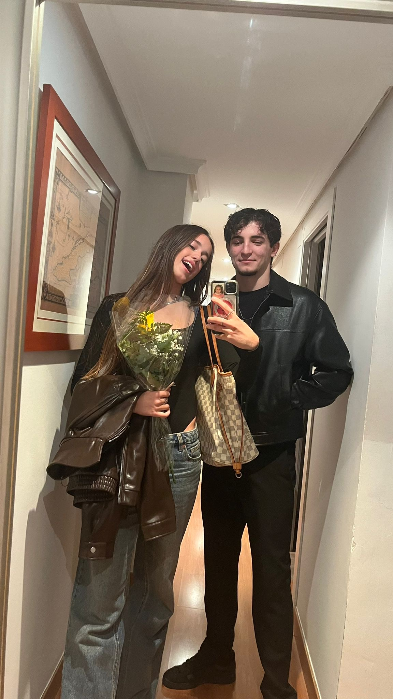


 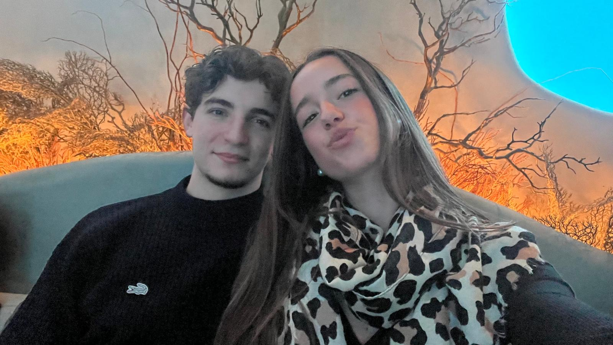
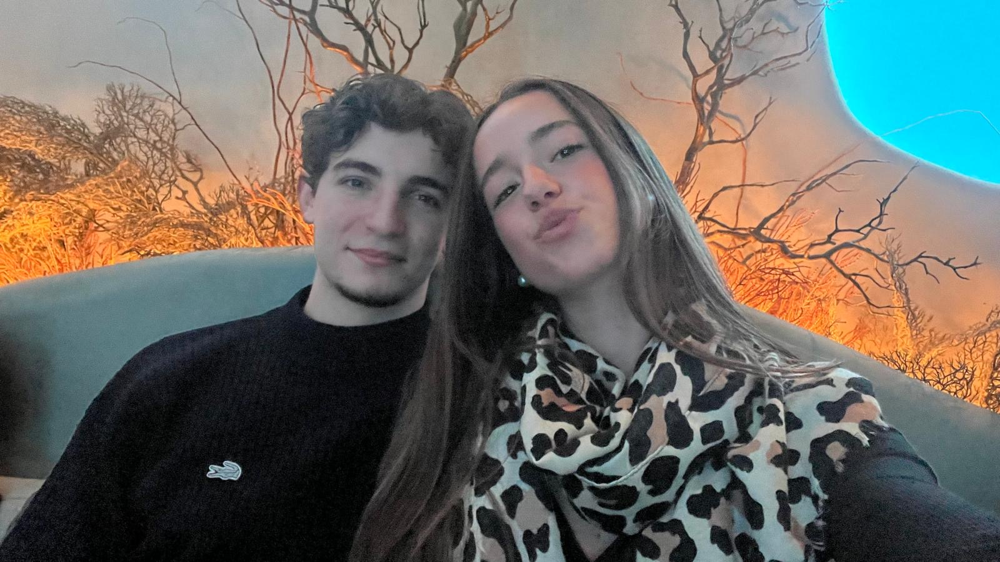